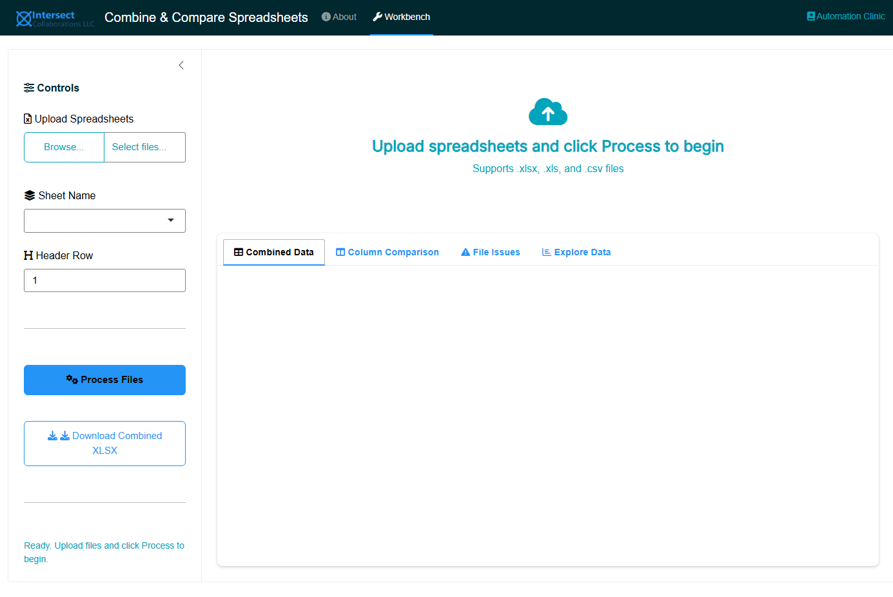
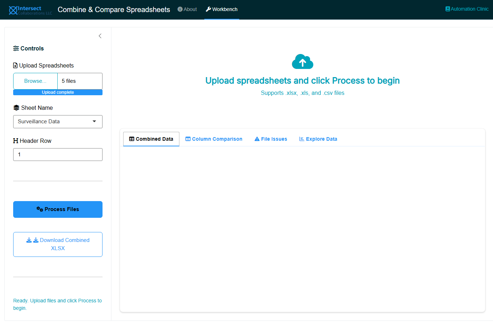
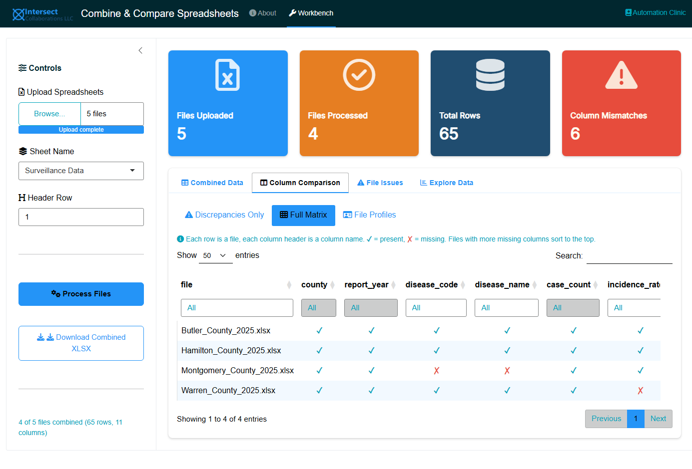
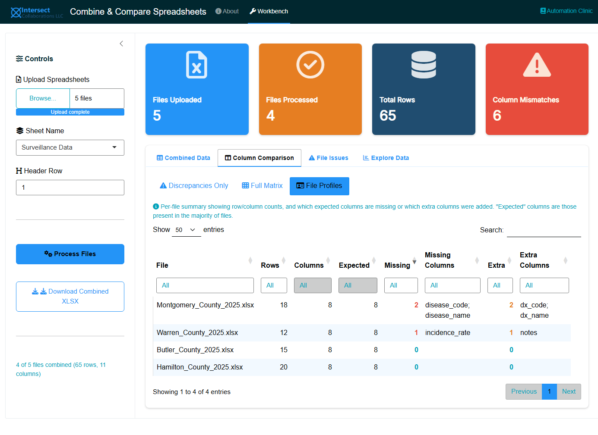
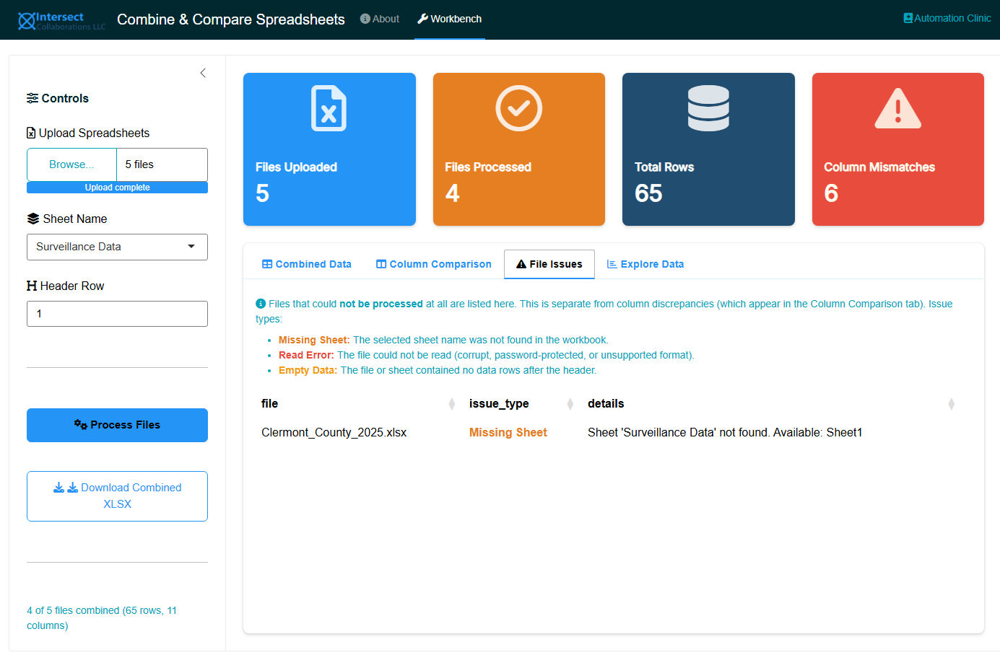
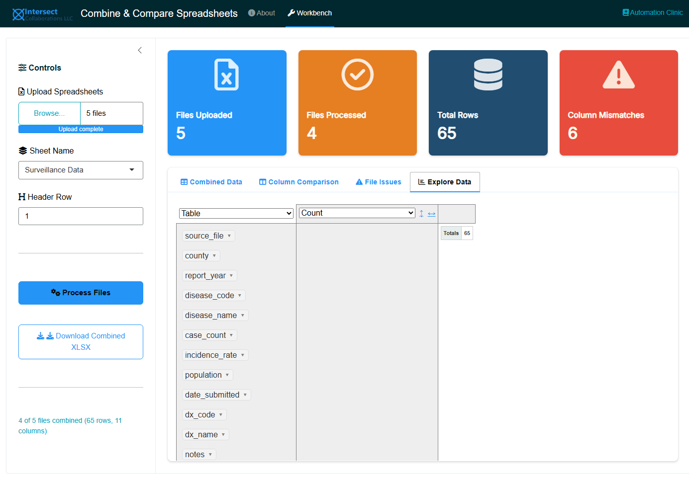

install.packages(c(
"shiny",
"bslib",
"readxl",
"dplyr",
"janitor",
"openxlsx",
"DT",
"tidyr",
"purrr",
"tibble",
"rpivotTable"
))7 The Problem
Public health teams frequently distribute Excel-based data collection forms to multiple sites, facilities, or respondents. A common workflow looks like this: a program coordinator creates a standardized spreadsheet template, emails it to ten county offices, and asks each office to fill in their data and return it. Sometimes the spreadsheets are stored in a shared folder instead. Either way, the coordinator eventually needs to combine all responses into a single dataset for analysis.
This process breaks down in predictable ways:
- Column headers get renamed. One site changes “date_of_diagnosis” to “dx_date.” Another adds a space. A third capitalizes it differently.
- Columns are added or removed. A site inserts an extra column for local tracking, or deletes a column they consider irrelevant.
- Sheet names differ. The template uses “Data Entry” but a respondent renames the tab to “Sheet1.”
- Manual merging is tedious and error-prone. Copy-pasting rows from ten spreadsheets into a master file can take hours and risks misaligned columns, dropped records, or duplicated data.
The coordinator may then try to analyze the combined data in Excel or R, only to discover that the structural inconsistencies have created problems downstream: mismatched column counts, unexpected blanks, or silently misaligned values.
ImportantWhy Not Use a Proper Data Collection Tool?
If you have the option, a structured data collection platform like REDCap, KoBoToolbox, or even Google Forms is almost always preferable to distributing Excel templates. These tools enforce field types, validation rules, and consistent structure at the point of entry, eliminating the column mismatch problem entirely.
However, many public health teams still end up with spreadsheets for practical reasons:
- No access to REDCap or similar tools. Not every organization has a REDCap instance, and setting one up requires server infrastructure and IRB coordination.
- Speed of setup. Creating an Excel template and emailing it takes minutes. Configuring a REDCap instrument with branching logic and validation can take days.
- Existing systems export spreadsheets. Cancer registries, laboratory information systems, EHR extracts, and surveillance platforms often produce Excel or CSV exports as their standard output format. The data was never “collected” in a spreadsheet; it was generated by another system.
- External partners use Excel. When collecting data from facilities, providers, or agencies outside your organization, you often cannot dictate the tool. You get what you get.
- One-time or ad-hoc collections. For a quick data call that will only happen once, the overhead of setting up a formal data collection instrument may not be justified.
This tool is designed for those situations: when spreadsheets are the reality, whether by choice or by circumstance.
7.1 The Scale of the Problem
Consider a state cancer registry that collects annual data submissions from 88 county health departments using a standardized Excel template. Each year, staff must:
- Download or receive 88 completed workbooks
- Open each one to verify the correct sheet exists
- Check that column headers match the template
- Copy and paste (or append) the data into a master file
- Troubleshoot the files that do not match
At 5 to 10 minutes per file, this is 7 to 15 hours of manual work, repeated every reporting cycle. And that estimate assumes nothing goes wrong.
8 The Solution
The Combine & Compare Spreadsheets app is a Shiny web application that automates this entire workflow. Upload your spreadsheets, click a button, and get:
- A combined dataset with a source file column tracking which record came from which file
- A column comparison matrix showing exactly which columns appear in which files, making structural differences immediately visible
- A file issues report listing any files with missing sheets, read errors, or empty data
- An interactive pivot table for exploring the combined data
- A branded Excel download containing all analysis sheets
The app supports .xlsx, .xls, and .csv files, and can handle mixed file types in a single upload.
8.1 Why This App Exists
Over the past 20 years, I have watched colleagues across public health programs wrestle with this exact task: merging a pile of returned spreadsheets into a single, usable dataset. I have also received enough requests to perform this merge myself that the pattern became impossible to ignore. The task is universal, the pain is real, and the solution is straightforward to automate.
I built this app so that I can share it with colleagues who have little or no programming experience. Rather than walking someone through an R script or doing the merge for them, I can point them to this tool and let them handle it independently.
NoteA Note on GUI Apps and Automation
In general, I do not recommend using GUI applications for automated workflows. If a task is recurring, the better investment is a scripted pipeline that runs without manual interaction. However, a point-and-click app like this one earns its place in two situations:
- Truly one-off requests. Sometimes you receive a batch of spreadsheets once and will never repeat the exercise. Setting up a project directory, writing a script, and configuring outputs is not justified for a single use.
- Quick pre-project checks. Before committing to a full data pipeline, you may want to take a first look at received files: Are the columns consistent? Are there empty submissions? How many records came back? This app provides that structural overview in seconds, helping you decide how to proceed.
For anything that will be repeated on a schedule, build a script.
8.2 Why Local-First Sharing?
Shiny applications can be shared in several ways: as hosted web applications on shinyapps.io, on a Shiny Server, or as source files that users run locally. I explicitly chose local-first distribution for this app because of the data it handles.
Public health spreadsheets frequently contain protected health information (PHI), personally identifiable information (PII), or other sensitive data. Hosting this app as a public webpage would invite users to upload that data to an external server, which creates unnecessary risk and may violate organizational data governance policies. By distributing the app as source code that runs on the user’s own machine, no data ever leaves the local environment.
TipHosting with Posit Connect
If your organization wants to make this app available to a team internally, Posit Connect is a publishing platform that supports Shiny applications with enterprise features:
- Password authentication
- SSL support
- Administrator tools
- Priority support
Posit Connect allows you to publish Shiny applications, R Markdown reports, dashboards, Jupyter Notebooks, and more in a centralized, access-controlled environment. You can publish directly from the RStudio IDE and configure flexible security policies to control who can access the app.
This is a good option for teams working in a for-profit or regulated setting where centralized access control and audit trails are required. Learn more at posit.co/products/enterprise/connect.
8.3 User Story
As a public health data coordinator who collects Excel-based data from multiple sites, I want a tool that automatically combines spreadsheets and flags structural differences, so that I can spend my time on analysis instead of copy-pasting and troubleshooting column mismatches.
8.4 GPS (Given-Person-Should)
Given a set of Excel workbooks returned by multiple respondents using a common template, the data coordinator should upload them to the Combine & Compare app and review the column comparison matrix to identify and resolve structural inconsistencies before combining the data for analysis.
9 Getting Started
9.1 Download the App
The app is available in the Public Health Automation Clinic GitHub repository:
- Download the app folder from the repository:
- Go to github.com/andre-inter-collab-llc/Public-Health-Automation-Clinic
- Navigate to
apps/combine-and-compare-spreadsheets/ - Download the entire folder (or clone the full repository)
- Clone the full repository (recommended if you use Git):
git clone https://github.com/andre-inter-collab-llc/Public-Health-Automation-Clinic.gitThe app files are located at apps/combine-and-compare-spreadsheets/ within the repository.
9.2 Install Requirements
The app requires R (version 4.1 or later) and the following packages:
RStudio Desktop (free) is the recommended IDE for running the app, though any R environment will work.
9.3 Run the App
Open app.R in RStudio and click Run App, or run the following from an R console:
shiny::runApp(here::here("apps", "combine-and-compare-spreadsheets"))The app will open in your default web browser. Everything runs locally on your machine; no data leaves your computer.

10 How to Use the App
10.1 Step 1: Upload Files
Click Upload Spreadsheets in the sidebar and select one or more Excel (.xlsx, .xls) or CSV (.csv) files. You can upload a mix of file types in a single batch.

10.2 Step 2: Select Sheet Name
For Excel files, the app reads all available sheet names across uploaded workbooks and presents them in a dropdown. Select the sheet containing the data you want to combine. CSV files do not require sheet selection.
10.3 Step 3: Set the Header Row
If your spreadsheets have title rows, instructions, or logos above the actual column headers, set the Header Row to the row number where headers appear. The default is row 1.

10.4 Step 4: Process Files
Click Process Files. The app will:
- Read data from each file using the selected sheet name and header row
- Clean and standardize column names (lowercase, underscores, consistent formatting)
- Add a
source_filecolumn to track the origin of each record - Combine all data into a single dataset
- Build a column comparison matrix
- Log any file issues (missing sheets, read errors, empty data)
A progress bar shows status during processing.
10.5 Step 5: Review Results
The Workbench tab provides four views:
10.5.1 Combined Data
The full merged dataset with all records from all files. Use the column filters to search and sort. The source_file column identifies which file each record came from.

10.5.2 Column Comparison
The Column Comparison tab contains three sub-views, designed to scale from a handful of files to hundreds:
10.5.2.1 Discrepancies Only
The default and most compact view. Shows only columns that are not present in every file. For each mismatched column you can see:
- How many files contain it and how many are missing it
- The percentage of files where it appears
- The exact filenames that are missing the column
If all files have identical column structures, this view shows a green “no discrepancies” message and an empty table. This is the view to check first: if it is empty, your data is structurally consistent and you can proceed directly to analysis.

10.5.2.2 Full Matrix
A complete presence/absence matrix with files as rows and column names as headers:
- ✓ (teal) indicates the column is present in that file
- ✗ (red) indicates the column is missing from that file
- The
columns_presentandcolumns_missingsummary columns appear at the end of each row - The file column is frozen so it stays visible while scrolling horizontally
- Files with more missing columns sort to the top
This layout scales better than column-per-file because typical datasets have 10 to 50 columns (manageable as table headers) while file counts can grow to hundreds or thousands (which work well as scrollable rows). For very large uploads, use the Excel download to filter and search the matrix in Excel.

10.5.2.3 File Profiles
A per-file summary showing:
| Column | Meaning |
|---|---|
| Rows | Number of data rows in the file |
| Columns | Number of columns in the file |
| Expected | Number of “expected” columns (those present in more than half of all files) |
| Missing | How many expected columns are absent from this file |
| Missing Columns | Semicolon-separated list of which expected columns are missing |
| Extra | How many columns this file has that are not in the expected set |
| Extra Columns | Semicolon-separated list of non-standard columns added to this file |
Files with more missing or extra columns sort to the top, making it easy to spot outliers that need manual correction before analysis.

10.5.3 File Issues
This tab is separate from column discrepancies. It lists files that could not be processed at all:
| Issue Type | Meaning |
|---|---|
| Missing Sheet | The selected sheet name was not found in the workbook |
| Read Error | The file could not be read (corrupt, password-protected, or unsupported format) |
| Empty Data | The file or sheet contained no data rows after the header |
If all files processed successfully, this tab shows “All files processed successfully.” Files listed here are excluded from the combined dataset and from the column comparison.

10.5.4 Explore Data
An interactive pivot table (rpivotTable) for ad-hoc exploration of the combined data. Drag columns into rows, columns, or filters to create cross-tabulations, charts, and summaries without writing code.

10.6 Step 6: Download
Click Download Combined XLSX to export a formatted Excel workbook with five sheets:
- Combined Data: the full merged dataset
- Discrepancies: only the mismatched columns (empty if all files match)
- Column Matrix: the full file-by-column presence/absence matrix
- File Profiles: per-file row/column counts with missing and extra columns listed
- File Issues: the processing issue log
The workbook uses professional formatting with styled headers. The Discrepancies and File Profiles sheets are particularly useful for filtering and searching in Excel when dealing with hundreds of files.
11 Supported File Formats
| Format | Extension | Notes |
|---|---|---|
| Excel (modern) | .xlsx |
Full support including sheet selection |
| Excel (legacy) | .xls |
Full support including sheet selection |
| CSV | .csv |
Sheet selection is not applicable |
Mixed file types can be uploaded together. For example, you can upload eight .xlsx files and two .csv files in the same batch.
12 Tips and Best Practices
TipPreventing Problems at the Source
The best way to handle column mismatches is to prevent them. When distributing data collection templates:
- Lock the header row in Excel (Review > Protect Sheet, allow only data entry in the data range)
- Use data validation on key columns to constrain inputs
- Name your sheets consistently and include instructions not to rename them
- Include a “do not modify” note in the template header
The Combine & Compare app is most valuable when prevention was not possible, which, in practice, is most of the time.
TipLarge File Uploads
The app supports uploads up to 100 MB total. For very large collections of spreadsheets, consider processing them in batches and combining the downloaded outputs.
NoteLocal-First
This app runs entirely on your local machine. No data is uploaded to external servers. This makes it suitable for use with protected health information (PHI) and other sensitive data, subject to your organization’s policies for running local software.